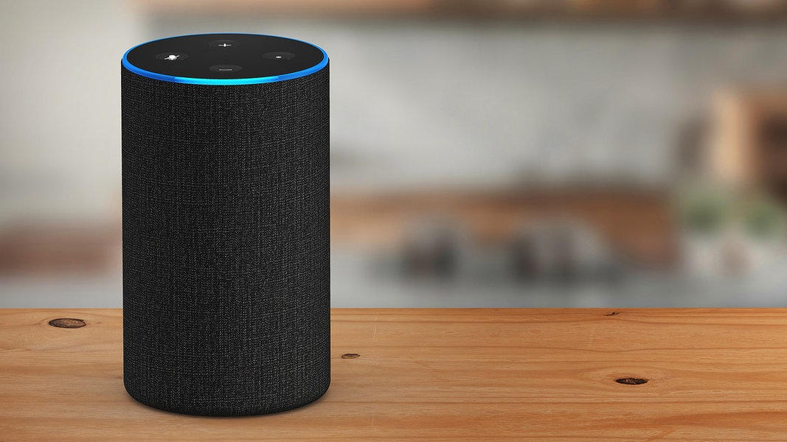

PRESENTATION
Voice User Interfaces
Name some Ideas
"Don’t ask a question if you won’t be able to understand the answer."
Margaret Urban | Voice User Interface Designer – Google
Definition: VUI
A Voice User Interface (VUI) enables communication between man and machine through speech-based interactions.

Definition: VCD
A Voice Command Device (VCD) is a device that is controlled via a Voice User Interface.

Definition: Smart Speaker
A Smart Speaker is a speaker connected to the Internet that integrates the functions of an Intelligent Personal Assistant (IPA) via non-intrusive voice control and speech recognition.
History of VUI
What's in this picture?
Thank you for your attention!